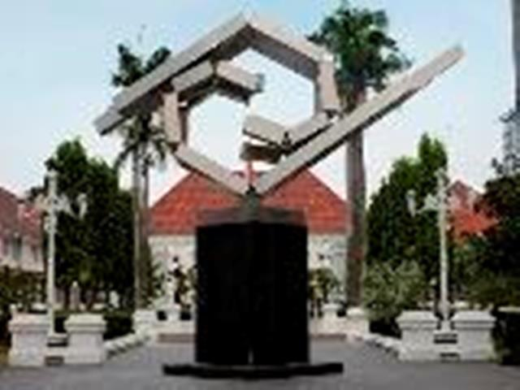
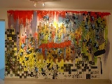
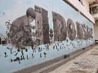

<div class="upage hidden black" id="galnas">
            <div class="upage-outer">
                <div class="uib-header header-bg container-group inner-element uib_w_62" data-uib="layout/header" data-ver="0">
                    <h2>Wisata Jakarta</h2>
                    <div class="widget-container wrapping-col single-centered"></div>
                    <div class="widget-container content-area horiz-area wrapping-col left"></div>
                    <div class="widget-container content-area horiz-area wrapping-col right">
                        <button class="btn widget uib_w_72 d-margins btn-default mustard" data-uib="twitter%20bootstrap/button" data-ver="1" id="bckgl"><i class="glyphicon glyphicon-chevron-left" data-position="icon only"></i>
                        </button>
                    </div>
                </div>
                <div class="upage-content ac0 content-area vertical-col left" id="page_93_63"></div>
                <!-- tab -->
                <div class="container">
                    <h3>Galeri Nasional</h3>
                </div>

                <div id="exTab2" class="container">
                    <ul class="nav nav-tabs">
                        <li class="active">
                            <a href="#5" data-toggle="tab">Beranda</a>
                        </li>
                        <li><a href="#6" data-toggle="tab">Informasi</a>
                        </li>
                        <li><a href="#7" data-toggle="tab">Fasilitas</a>
                        </li>
                        <li><a href="#8" data-toggle="tab">Peta</a>
                        </li>
                    </ul>

                    <div class="tab-content ">
                        <div class="tab-pane active" id="5">
                            <h3>Deskripsi Galeri Nasional</h3>
                            <br>
                            <center>
                                
                            </center>

                            <p>Galeri nasional ini adalah sebuah gedung yang berfungsi sebagai tempat koleksi, pameran, dan perhelatan acara seni rupa Indonesia dan mancanegara.Gedung ini merupakan institusi milik pemerintah di bawah Menteri Pendidikan dan
                                Kebudayaan. Tempat ini sangat cocok bagi kalian pecinta seni dan sejenisnya karena karya-karya yang dipamerkan sangat unik dan sangat mengagumkan.</p>
                            <p>Pameran yang diselenggarakan di Galeri Nasional Indonesia terdiri dari: Pameran Tetap, Pameran Temporter dan Pameran Keliling. Gedung pameran yang tersedia, terdapat 4 (empat) gedung, yaitu: Gedung A, Gedung B, Gedung C dan
                                Gedung D. Masing-masing gedung/ruang dikhususkan untuk memajang karya seni rupa modern dan kontemporer, seperti; Lukisan, patung, kria, grafis, fotografi, instalasi, seni media baru, dan lain-lain.</p>
                            <p>Terdapat Pameran penting yang pernah digelar di Galeri Nasional Indonesia antara lain: CP Open Biennale, Pameran Seni Rupa Nusantara, Asean New Media Arts Exhibition, OK Video, Jakarta Biennale, Pameran Besar Seni Rupa Indonesia:
                                MANIFESTO, Indonesia Art Award Exhibition; Pameran Karya Anak2 Berprestasi; Pameran “The Jakarta International Photo Summit, dll serta pameran lain yang menampilkan karya seniman Indonesia dan mancanegara.</p>

                            <h3>Sejarah Gedung Galeri Nasional</h3>
                            <p>Gedung yang terletak di Konengsplein Cost no. 4 ini, yang sekarang disebut dengan jalanMedan Merdeka Timur No.14 Jakarta Pusat. Pada tahun 1817, G.C van Rijk membangun sebuah Indische Woonhuis di atas kavling ini dengan material
                                yang diambil bekas Kasteel Batavia. Pada tahun 1900 gedung ini merupakan bagian dari Gedung Pendidikan yang didirikan oleh Yayasan Kristen Carpentier Alting Stitching ( CAS ) yang bernaung di bawah Ordo Van Vrijmetselaren
                                atas prakarsa pendeta Ds. Albertus Samuel Carpentier Alting ( 1837-1935). Gedung yang berarsitektur kolonial Belanda ini dipergunakan untuk Asrama Khusus bagi wanita, sebagai usaha pendidikan yang pertama di Hindia Belanda.</p>
                            <p>Pada tahun 1955, pemerintahan Republik Indonesia melarang kegiatan pemerintah dan masyarakat Belanda. Bangunan dan pengelolaan usaha pendidikan tersebut kemudian dialihkan kepada Yayasan Raden Saleh yang masih penerus CAS dan
                                tetap dibawah gerakan Vijmetselaren Lorge. Berdasarkan keputusan yang dikeluarkan penguasaan tertinggi No.5 tahun 1962 yang ditanda tangani oleh Presiden Soekarno, gerakan Vijmetselaren Lorge dilarang dan Yayasan Raden
                                Saleh dibubarkan. Sekolah-sekolah beserta segala peralatannya diambil alih oleh pemerintahan Republik Indonesia dan diserahkan kepada Departemen Pendidikan dan Kebudayaan.</p>

                            <div class="container">
                                <div id="myCarousel13" class="carousel slide" data-ride="carousel">
                                    <!-- Indicators -->
                                    <ol class="carousel-indicators">
                                        <li data-target="#myCarousel" data-slide-to="0" class="active"></li>
                                        <li data-target="#myCarousel" data-slide-to="1"></li>
                                        <li data-target="#myCarousel" data-slide-to="2"></li>
                                    </ol>

                                    <!-- Wrapper for slides -->
                                    <div class="carousel-inner" role="listbox">
                                        <div class="item active">
                                            
                                        </div>

                                        <div class="item">
                                            
                                        </div>

                                        <div class="item">
                                            
                                        </div>

                                        <div class="item">
                                            
                                        </div>

                                        <div class="item">
                                            
                                        </div>

                                        <div class="item">
                                            
                                        </div>

                                        <div class="item">
                                            
                                        </div>

                                        <div class="item">
                                            
                                        </div>

                                        <div class="item">
                                            
                                        </div>
                                    </div>

                                    <!-- Left and right controls -->
                                    <a class="left carousel-control" href="#myCarousel13" data-slide="prev">
                                        <span class="glyphicon glyphicon-chevron-left"></span>
                                        <span class="sr-only">Previous</span>
                                    </a>
                                    <a class="right carousel-control" href="#myCarousel13" data-slide="next">
                                        <span class="glyphicon glyphicon-chevron-right"></span>
                                        <span class="sr-only">Next</span>
                                    </a>
                                </div>
                            </div>

                            <!-- end slider -->

                            <h3>Pameran</h3>
                            <h4><p>Pameran Tetap</p></h4>
                            <p>Pameran Tetap disajikan dengan penataan berdasarkan periodisasi perjalanan seni rupa Indonesia yang terbagi dalam dua bagian besar, yaitu Galeri 1 dan Galeri 2, yang secara keseluruhan terdiri dari 11 ruang dengan dilengkapi
                                teks informasi (cetak dan multimedia).</p>
                            <h4><p>Pameran Temporer</p></h4>
                            <p>Pameran Temporer adalah kegiatan-kegiatan pameran seni tematis yang diselenggarakan pada periode-perido tertentu baik oleh Galeri Nasiona maupun atas kerja sama dengan pihak lain. Untuk Pameran Temporer tersedia ruang pameran
                                Gedung A (1.350 M²), Gedung B (2.800 M²) dan Gedung C (750 M²). Masing-masing gedung/ruang dikhususkan untuk memajang karya seni rupa modern dan kontemporer, seperti; Lukisan, patung, kria, grafis, fotografi, instalasi,
                                seni media baru, dan lain-lain.</p>
                            <p>Banyak pameran penting yang pernah digelar di Galeri Nasional Indonesia antara lain: CP Open Biennale, Pameran Seni Rupa Nusantara, Asean New Media Arts Exhibition, OK Video, Jakarta Biennale, Pameran Besar Seni Rupa Indonesia:
                                MANIFESTO, Indonesia Art Award Exhibition; Pameran Karya Anak2 Berprestasi; Pameran “The Jakarta International Photo Summit, dll serta pameran lain yang menampilkan karya seniman Indonesia dan mancanegara.</p>
                            <h4><p>Pameran Keliling</p></h4>
                            <p>Pameran keliling koleksi Galeri Nasional Indonesia baik yang diselenggarakan di dalam negeri maupun di luar negeri merupakan program yang diselenggarakan secara berkala (minimal setahun sekali). Program ini bertujuan untuk
                                memperkenalkan eksistensi lembaga dan koleksi seni rupa (state collections) karya koleksi Galeri Nasional Indonesia kepada masyarakat luas. Selain itu juga merupakan ajang untuk peningkatan kreativitas dan apresiasi seni
                                serta mendorong semangat berkarya bagi perupa daerah.</p>
                        </div>

                        <div class="tab-pane" id="6">
                            <div class="container">
                                <div class="col-md-6 col-sm-6">

                                    <div class="panel-group wrap" id="accordion" role="tablist" aria-multiselectable="true">
                                        <div class="panel">
                                            <div class="panel-heading" role="tab" id="heading5">
                                                <h4 class="panel-title">
        <a role="button" data-toggle="collapse" data-parent="#accordion" href="#collapse5" aria-expanded="true" aria-controls="collapse5">
         Waktu Operasional
        </a>
      </h4>
                                            </div>
                                            <div id="collapse5" class="panel-collapse collapse in" role="tabpanel" aria-labelledby="heading5">
                                                <div class="panel-body">
                                                    <h4>Selasa - Jum'at</h4>
                                                    <p>09.00 - 16.00 WIB</p>
                                                </div>
                                            </div>
                                        </div>
                                        <!-- end of panel -->

                                        <div class="panel">
                                            <div class="panel-heading" role="tab" id="heading6">
                                                <h4 class="panel-title">
        <a class="collapsed" role="button" data-toggle="collapse" data-parent="#accordion" href="#collapse7" aria-expanded="false" aria-controls="collapse7">
          Tiket Masuk
        </a>
      </h4>
                                            </div>
                                            <div id="collapse7" class="panel-collapse collapse" role="tabpanel" aria-labelledby="heading6">
                                                <div class="panel-body">
                                                    <!-- list info -->
                                                    <div class="list-group">
                                                        <a href="#" class="list-group-item list-group-item-info">

                                                            <h4>Gratis</h4>

                                                        </a>
                                                    </div>
                                                </div>
                                            </div>
                                        </div>
                                        <!-- end of panel -->

                                    </div>
                                    <!-- end of #accordion -->

                                </div>
                                <!-- end of wrap -->

                            </div>
                            <!-- end of container -->
                        </div>

                        <div class="tab-pane" id="7">
                            <h3>Fasilitas Umum</h3>
                            <br>
                            <!-- tab toilet galnas -->
                            <div class="container">
                                <h1></h1>
                            </div>
                            <div id="exTab1" class="container">
                                <ul class="nav nav-pills">
                                    <li class="active">
                                        <a href="#1j" data-toggle="tab">Toilet / Restroom</a>
                                    </li>
                                    <li><a href="#2j" data-toggle="tab">Tempat Ibadah</a>
                                    </li>

                                </ul>

                                <div class="tab-content clearfix">
                                    <div class="tab-pane active" id="1j">
                                        <h3></h3>
                                        <iframe src="toilet23.html" width="100%" height="700px" frameborder="80" style="border:0" allowfullscreen=""></iframe>
                                    </div>
                                    <div class="tab-pane" id="2j">
                                        <h3></h3>
                                        <iframe src="musola23.html" width="100%" height="700px" frameborder="80" style="border:0" allowfullscreen=""></iframe>
                                    </div>
                                </div>
                            </div>

                        </div>

                        <div class="tab-pane" id="8">
                            <h3>Petunjuk Arah Galeri Nasional</h3>
                            <br>
                            <iframe src="galnas.html" width="100%" height="700px" frameborder="80" style="border:0" allowfullscreen=""></iframe>
                        </div>
                    </div>
                </div>
            </div>
        </div>
        <!-- end page galnas -->